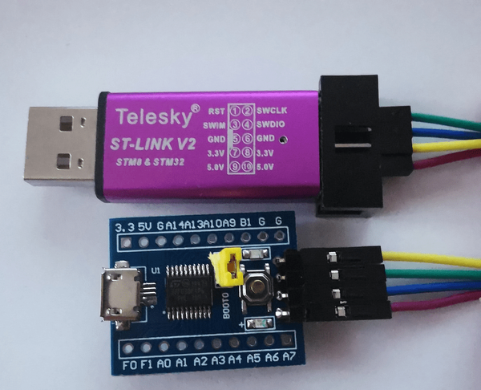

14:37:31 : STM32CubeProgrammer API v2.17.0 | Windows-64Bits 14:37:38 : UR connection mode is defined with the HWrst reset mode 14:37:38 : ST-LINK SN : 55FF6B065177495619420887 14:37:38 : ST-LINK FW : V2J45S7 14:37:38 : Board : -- 14:37:38 : Voltage : 3.27V 14:37:38 : SWD freq : 4000 KHz 14:37:38 : Connect mode: Hot Plug 14:37:38 : Reset mode : Software reset 14:37:38 : Device ID : 0x444 14:37:38 : Revision ID : Rev 1.0 14:37:38 : Debug in Low Power mode is not supported for this device. 14:37:39 : UPLOADING OPTION BYTES DATA ... 14:37:39 : Bank : 0x00 14:37:39 : Address : 0x1ffff800 14:37:39 : Size : 16 Bytes 14:37:39 : UPLOADING ... 14:37:39 : Size : 1024 Bytes 14:37:39 : Address : 0x8000000 14:37:39 : Read progress: 14:37:39 : Data read successfully 14:37:39 : Time elapsed during the read operation is: 00:00:00.007Then program and verify the bootstrap code. Either binary, Intel hex or Motorola S rec format are supported. Our Makefile has rules for binary and Intel hex, objcopy also support Motorola S record as an output format. Last build produced boot.hex.
14:40:24 : Memory Programming ... 14:40:24 : Opening and parsing file: boot.hex 14:40:24 : File : boot.hex 14:40:24 : Size : 10.00 B 14:40:24 : Address : 0x08000000 14:40:24 : Erasing memory corresponding to segment 0: 14:40:24 : Erasing internal memory sector 0 14:40:24 : Download in Progress: 14:40:24 : File download complete 14:40:24 : Time elapsed during download operation: 00:00:00.130 14:40:24 : Verifying ... 14:40:24 : Read progress: 14:40:24 : Download verified successfully 14:40:24 : RUNNING Program ... 14:40:24 : Address: : 0x08000000 14:40:24 : Application is running, Please Hold on... 14:40:24 : Start operation achieved successfullyFinally check the registers in the MCU Core Panel:
MSP: 0x20001000 PC: 0x8000008After reset, the stack pointer has been initialized and the program counter is on the idle loop under execution.
If I check the Programming Manual PM0215 STM32F0 series Cortex-M0 programming manual, I can read the following about the registers MSP and PC:
Stack pointer (SP) register R13 In Thread mode, bit[1] of the CONTROL register indicates the stack pointer to use: ● 0: Main Stack Pointer (MSP)(reset value). On reset, the processor loads the MSP with the value from address 0x00000000. ● 1: Process Stack Pointer (PSP). Program counter (PC) register R15 Contains the current program address. On reset, the processor loads the PC with the value of the reset vector, which is at address 0x00000004. Bit[0] of the value is loaded into the EPSR T-bit at reset and must be 1.- According to this, initial values for MSP and PC registers are fetched from address 0x00000000 and 0x00000004 respectively, but I have located the isr table at the beginning of the Flash memory at address 0x08000000! This works because the memory space at address 0 is a mirror of another memory area. Which area is mirrored depends of the state of the BOOT0 pin. On the board I am testing, there is a jumper to select either Flash or System memory by setting the state of the BOOT0 pin to high or low.
- The ESPR T-bit, mentioned in the description of the PC register is the Thumb bit. As I highlighted before when I checked the output of our first build, bit 0 of the second entry in our isr table is set to 1 as requested by this specification.
Next, I will provide feedback of execution directly through the board.